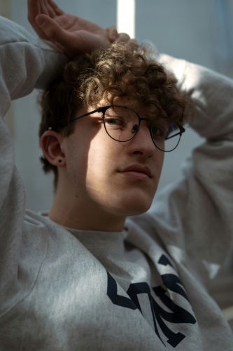
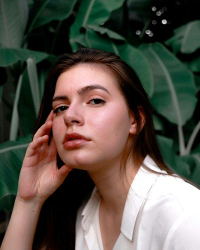
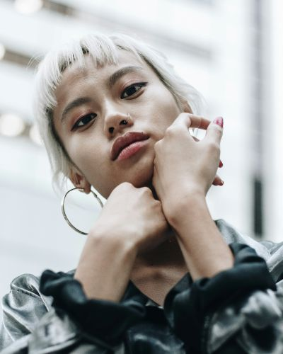
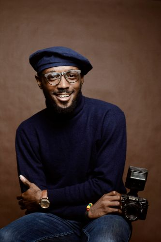

都市空間の中に生まれる一瞬の静寂を捉える作品で知られる。 彼は人の気配が残る場所や、 光が差し込むわずかな時間帯を選び、 都市の喧騒から切り離されたような瞬間を切り取る。 画面に生まれる余白は、 単なる空間ではなく、時間の流れを感じさせる要素として機能する。 その静かな緊張感が、作品全体に深い奥行きを与えている。

静けさの中に潜む感情の揺らぎを、抑制された色彩と大胆な余白で表現している。 画面の大部分をあえて空ける構成は、 描かれたモチーフの存在感を際立たせると同時に、 鑑賞者が自由に物語を想像できる空間を生み出す。 人物はどこか距離を感じさせる佇まいで描かれ、 その沈黙のような雰囲気が、内面の感情をより強く印象づける。

ミニマルな線画と、光を含んだような柔らかな色彩を用いた作品を制作している。 描きすぎないこと、語りすぎないことを信条とし、 画面に広く残された余白を重要な要素として扱う。 その空間は単なる空白ではなく、 鑑賞者の記憶や感情が静かに入り込むための“受け皿”として機能する。 人物や風景はあくまで輪郭として存在し、 その曖昧さが、見る人それぞれの解釈を生み出す。 本展示では「静かな対話」をテーマに、 光と距離感を意識した新作シリーズを発表する。

建築と自然光の関係性に着目し、構造の中に生まれる空間美を探求している。 整然とした構図と抑制された色調のなかに、 意図的な“間”をつくることを重視。 光が差し込む瞬間や、影が静かに伸びる時間帯を選び、 都市の中に潜む静寂を切り取る。 彼の作品における余白は、 視線を誘導するだけでなく、 空間そのものの存在感を強調する役割を持つ。